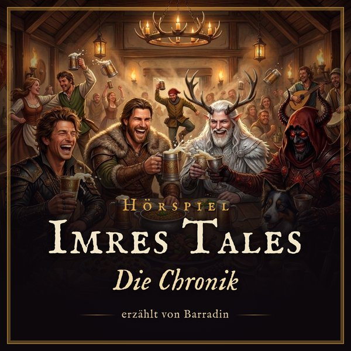

Hörspiel-Podcast
Barradin – Barde, Pfeifenraucher und bescheidenster Held aller Zeiten (sagt er) – erzählt unsere D&D-Kampagne als Hörspiel: mit Geräuschkulisse, Musik und sehr viel Übertreibung.
Kostenlos, ohne Anmeldung – in jeder Podcast-App.
Bei Spotify, Apple Podcasts, radio.de und Co. findest du „Imres Tales – Die Chronik“ auch über die Suche, sobald der Podcast dort freigeschaltet ist.
Erzähler: Helmut; weitere Stimmen: Gregory Grumble (Gundren), Ben (Friedrich), Leo (Echo), Valerian (Ezekiel), Grimble, Moreana, Mordran Doomforge, Azrak, Kermy (alle ElevenLabs). Musik und Geräusche: Versilian Community Sample Library (CC0), Fluid R3 GM von Frank Wen (CC BY 3.0), Kenney und OpenGameArt (CC0), Freesound: alex36917 „Rain“, Digifish Music „Storm“, Luftrum „Waves“ (CC BY), Blanket (CC0) – vollständige Liste in den Quellen auf imrestales.de. Inoffizieller Fan-Inhalt nach der Fan Content Policy von Wizards of the Coast; nicht von Wizards genehmigt oder unterstützt. Teile der Inhalte sind Eigentum von Wizards of the Coast. ©Wizards of the Coast LLC.